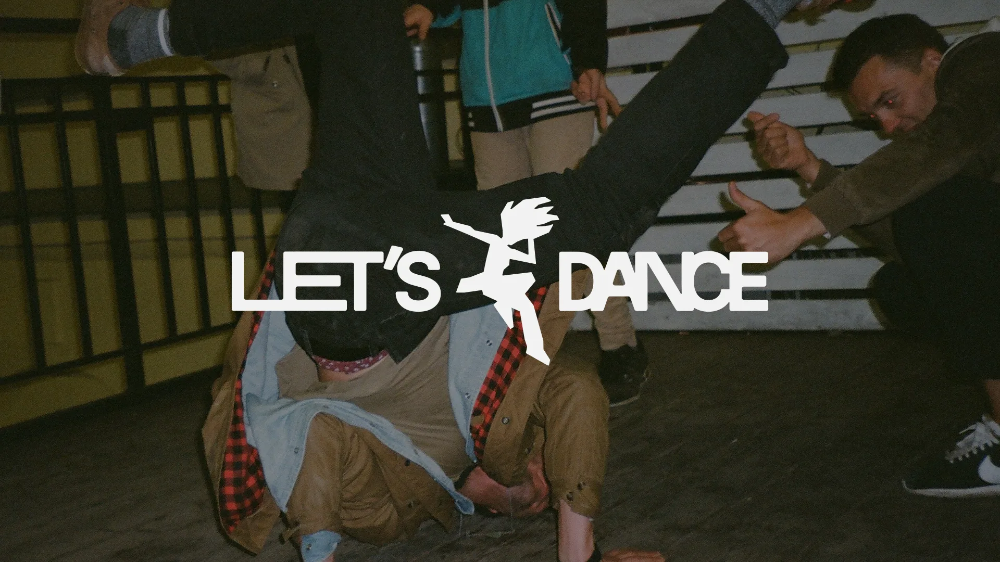
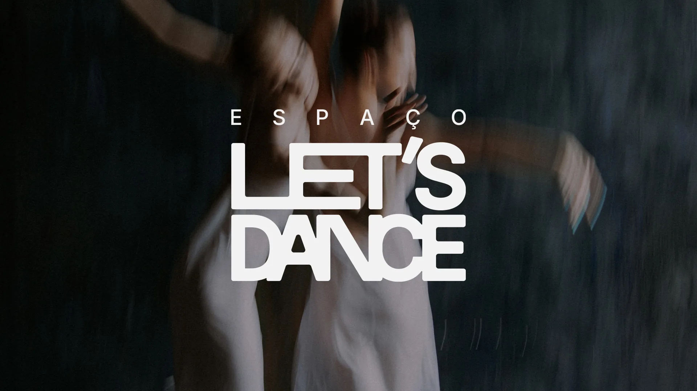
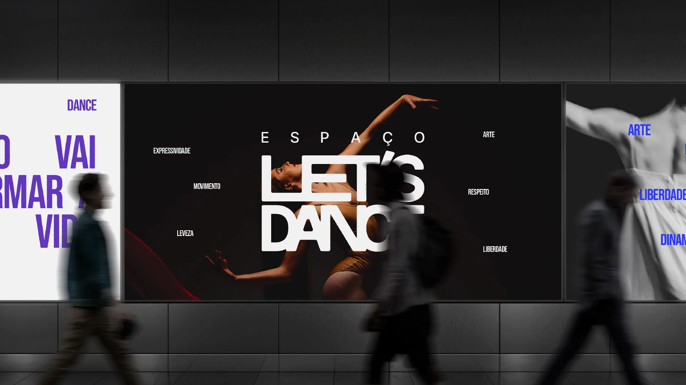
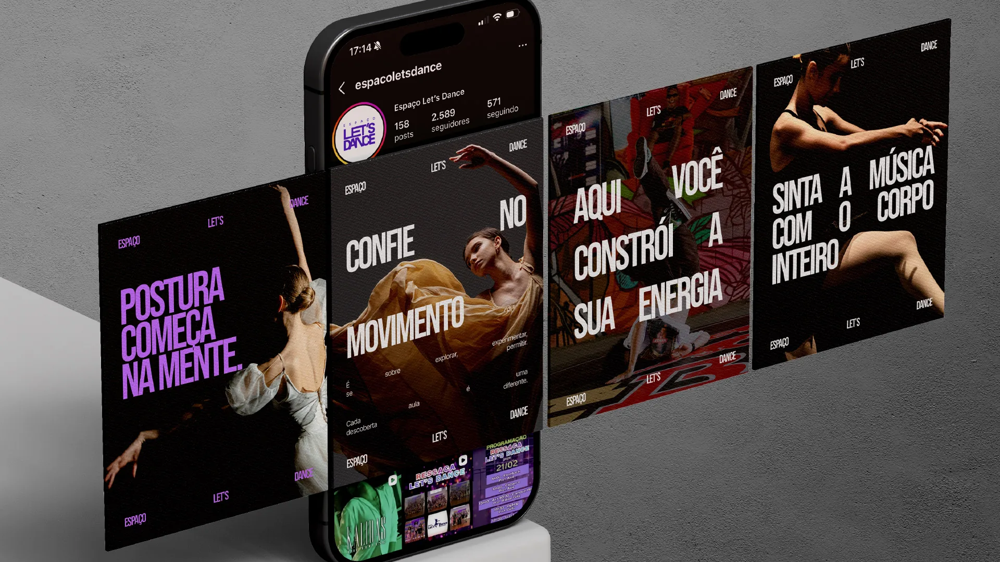
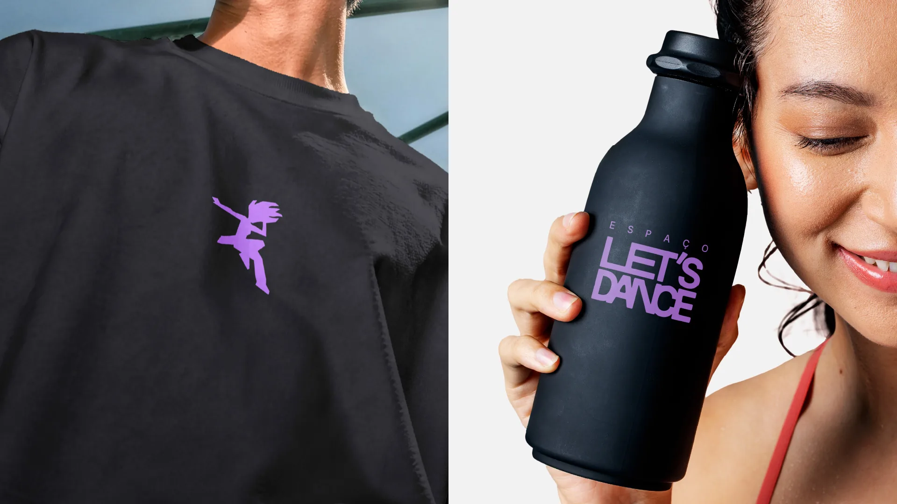

Contexto
Segundo dados do Brain Inteligência Estratégica, mais de 50% dos brasileiros praticam atividades físicas hoje, e o setor de dança pode ser um grande aliado nesse contexto.
Desafio e estratégia
- Desafio1
- Muitas marcas tradicionais do segmento adotam uma postura pouco acessível, causando dúvidas e insegurança a quem pretende adotar essa prática artística como hobby ou profissão no Brasil.
- Estratégia2
- O Espaço Let’s Dance nasceu com o propósito de romper com essa barreira e tornar a dança acessível a todos. Por isso, focamos em um posicionamento contemporâneo e convidativo, com a mensagem de que pessoas de todos os níveis podem encontrar liberdade e satisfação nessa arte, seja por hobby ou profissão.



